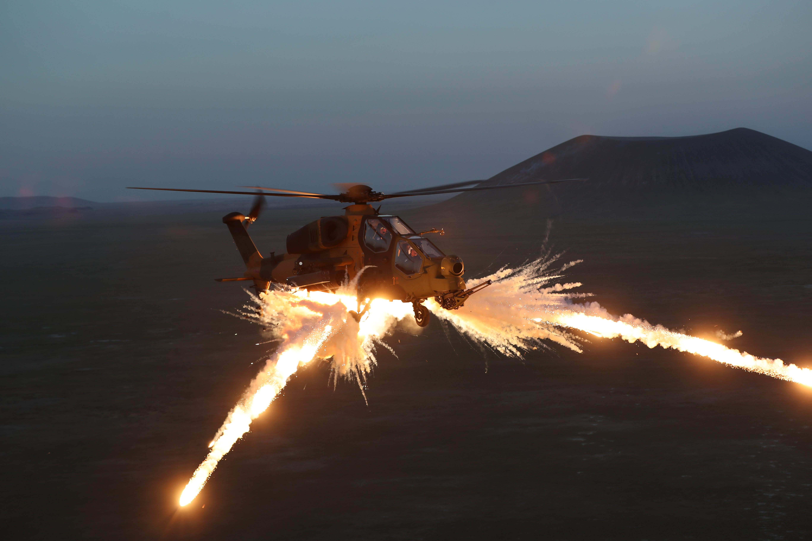
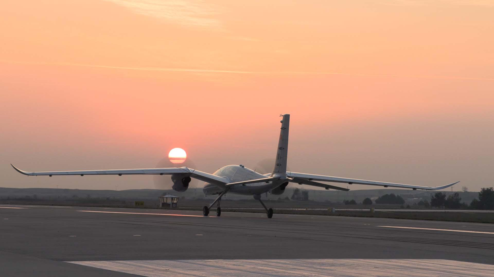
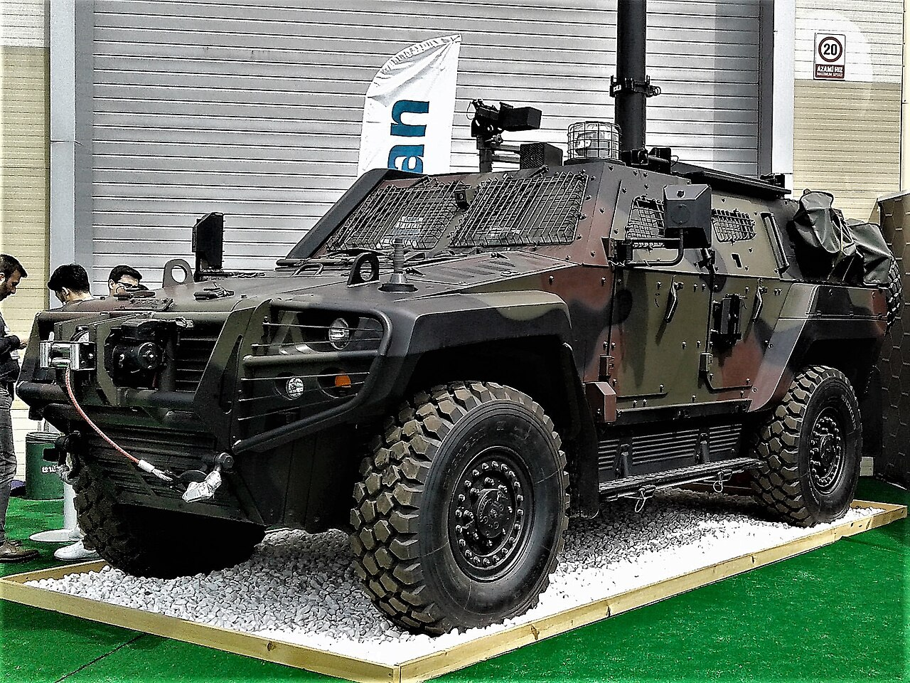
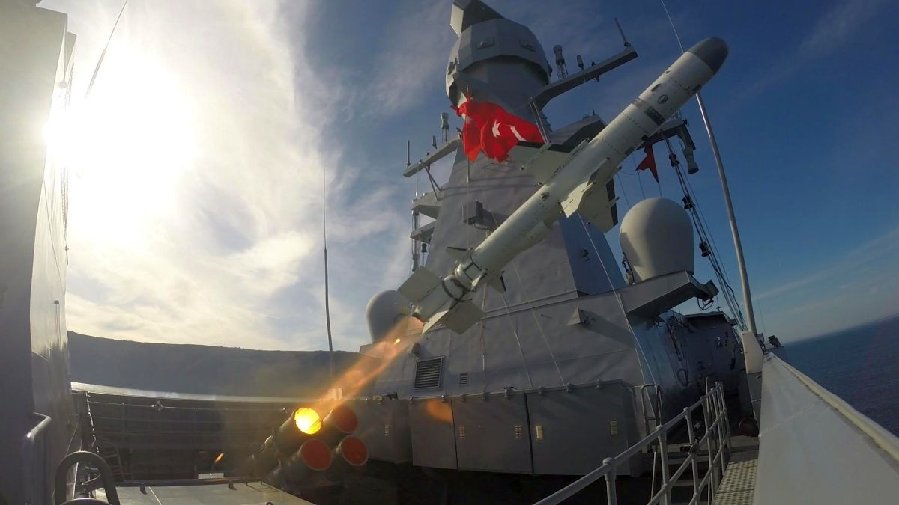
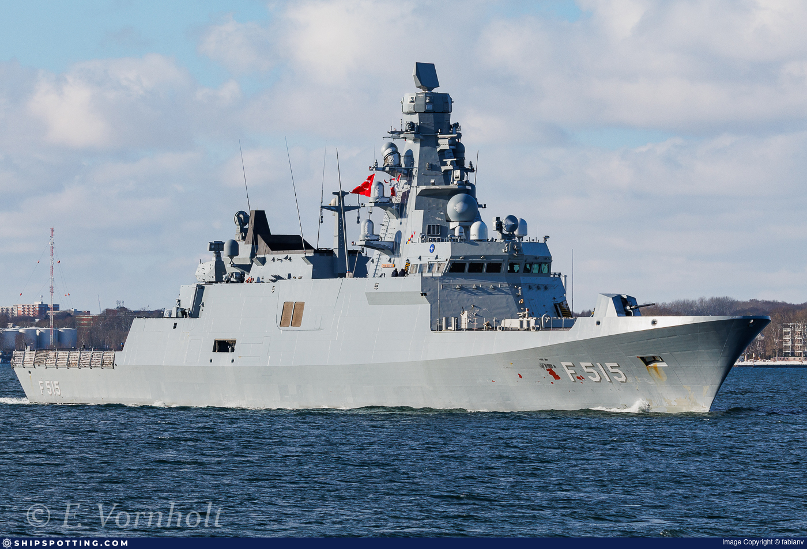

Araç ve Sistem Fotoğrafları
Sadece depodaki mevcut görseller kullanılmıştır.











Envanterdeki platformlardan seçili görseller. Mobilde sağa-sola kaydırarak gezebilirsiniz.
Sadece depodaki mevcut görseller kullanılmıştır.




